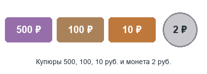

Решение алгоритмической задачи
Задача 1006. Известна денежная сумма. Разменять её купюрами 500, 100, 10 и монетой 2 руб., если это возможно.

Все номиналы чётные, поэтому нечётную сумму разменять нельзя. Чётную можно всегда:
берём максимум купюр по 500, затем по 100 и по 10, а остаток меньше 10 руб. добираем монетами по 2.
Такой «жадный» подход даёт минимальное число купюр и монет, потому что каждый номинал делится на следующий.
Похожая задача решается при выдаче наличных в банкомате и при расчёте сдачи на кассе.